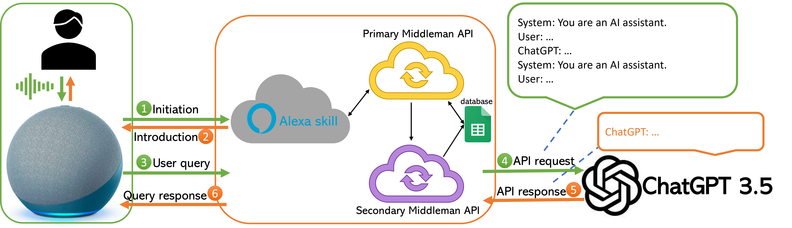
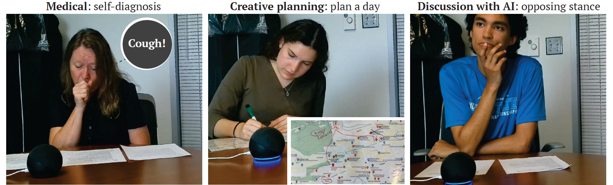

Conventional voice assistants (VAs) suffer from the limitations of unable to understand contextual information (respond to follow-up questions), unable to understand complex commands, and intolerant to errors such as mistranscriptions. Large language models (LLMs) serve as a good tool to overcome these limitations, but existing platforms for LLMs are all text-based. We are therefore interested in exploring the effect of using LLMs as a voice-based platform in the form of a VA. This work is currently under review1.
We used Amazon Alexa as our VA platform, and incorporated ChatGPT 3.5 as the backend LLM through an Alexa skill and middleman API’s. A system structure diagram is shown below.

We designed a user study where the participant would use the LLM-based interface to complete three different tasks:

We extracted different interaction patterns from the recorded videos, and demonstrated that our LLM-powered VA is able to facilitate smoother, more human-like interaction compared to conventional VAs.
Amama Mahmood, Junxiang Wang, Bingsheng Yao, Dakuo Wang, and Chien-Ming Huang. “LLM-powered conversational voice assistants: interaction patterns, opportunities, challenges, and design guidelines.” Under review. ↩